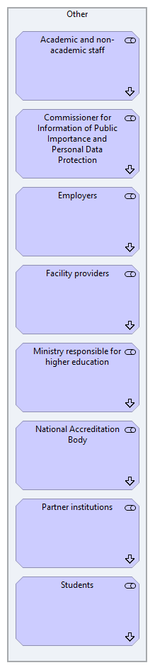

Stakeholder Navigation
(
)

generated_by
gen_stakeholder_diagrams.py::build_navigation_view
generator_path
pedro/capabilities/motivation/gen_stakeholder_diagrams.py
run_at
2026-10-10T19:56:49
model_code
HIEDRS
view_type
motivation_navigation
Other
Academic and non-academic staff
Academic and non-academic staff — Motivation
Commissioner for Information of Public Importance and Personal Data Protection
Commissioner for Information of Public Importance and Personal Data Protection — Motivation
Employers
Employers — Motivation
Facility providers
Facility providers — Motivation
Ministry responsible for higher education
Ministry responsible for higher education — Motivation
National Accreditation Body
National Accreditation Body — Motivation
Partner institutions
Partner institutions — Motivation
Students
Students — Motivation